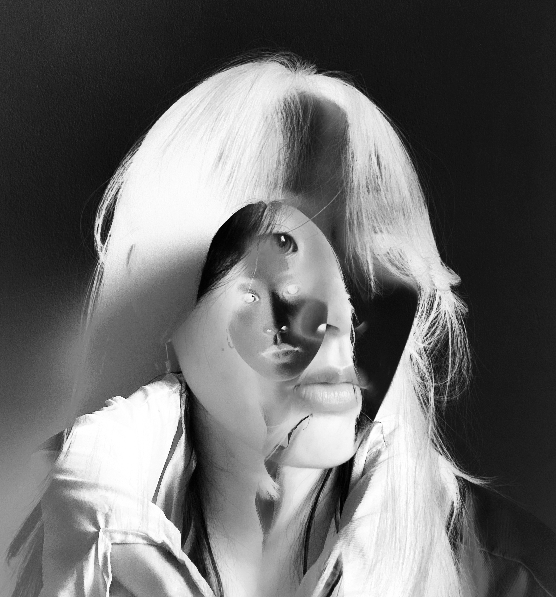

Andrea Chang
Branding
Core Interaction
Illustrations
Hi, I'm Andrea :) I'm based in New York City and am currently studying Communication Design at Parsons School of Design. I enjoy coding, illustrating, and creating brand identities.

Cross-Platform Storytelling
Wikipedia Layout (hw2)
Table of Contents Exercise
Photo Collage (hw3)
Animation Activity
Stories as Networks
Elastic Collections
Input/Output